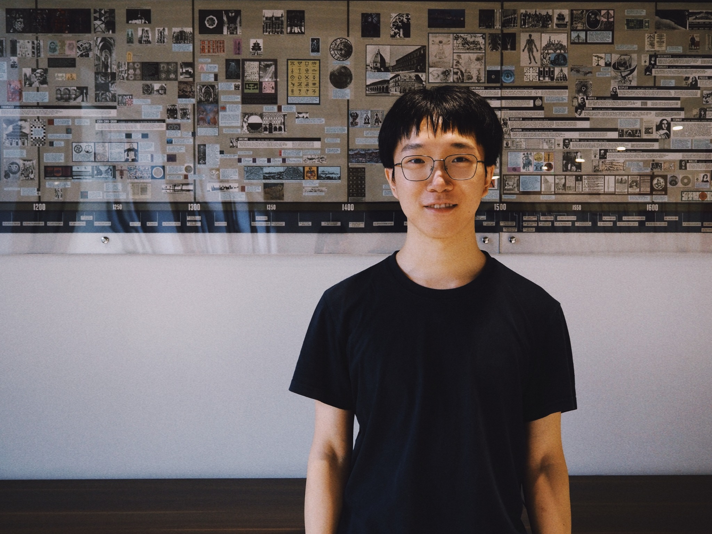

I am a Ph.D. student in the School of Mathematical Sciences at the University of Science and Technology of China, advised by Jie Ma.
My research interests lie in combinatorics, particularly extremal and structural graph theory.
Email: zyzhao2024@mail.ustc.edu.cn

Papers and preprints
- Longest cycles intersect linearly in highly connected graphs with Jie Ma and Bo Ning. Preprint, 2026. [arXiv]
- An exact formula for Erdős’ problem 1005 with Yanmohan Wang and Mingxu Xie. Preprint, 2026. [arXiv]
- Longest cycles and Dirac-type results in highly connected graphs with Jie Ma and Bo Ning. Preprint, 2026. [arXiv]
- Dean’s conjecture and cycles modulo k with Yufan Luo and Jie Ma. Preprint, 2026. [arXiv]
- Intersections of longest cycles in vertex-transitive and highly connected graphs with Jie Ma. Preprint, 2025. [arXiv]
- Leaf-to-leaf paths and cycles in degree-critical graphs with Francesco Di Braccio, Kyriakos Katsamaktsis, Jie Ma and Alexandru Malekshahian. Combinatorica 46, Article 11 (2026). [arXiv][journal]